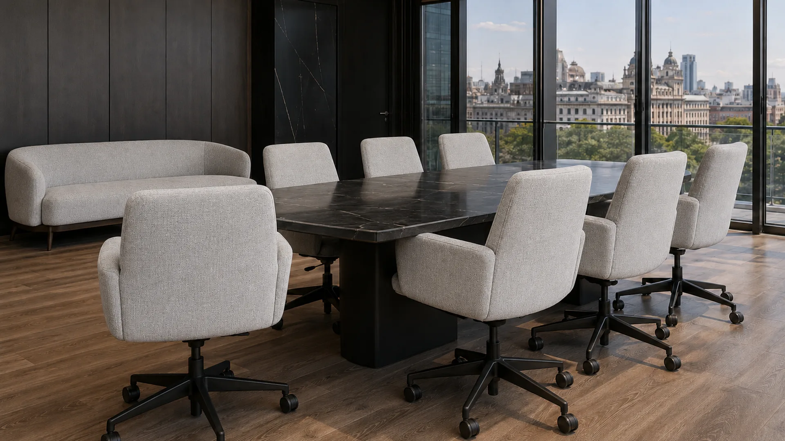

Oficinas
Sillas operativas, sillones de recepción, salas de reunión y espacios colaborativos.
Solicitar propuesta →Orden, cuidado y limpieza de tapizados corporativos e institucionales con relevamiento previo, planificación por etapas y mínima interrupción de la operación.

Adaptamos el plan a cada tipo de organización, volumen de piezas, intensidad de uso y disponibilidad del espacio.
Sillas operativas, sillones de recepción, salas de reunión y espacios colaborativos.
Solicitar propuesta →Tapizados en áreas de alta exposición con planificación para reducir interferencias.
Solicitar propuesta →Espacios educativos, de salud, profesionales y de atención al público.
Solicitar propuesta →Mobiliario de uso comercial donde la presentación forma parte de la experiencia.
Solicitar propuesta →Interiores textiles de unidades corporativas, comerciales o de transporte.
Solicitar propuesta →Frecuencias preventivas para sostener higiene y presentación durante el año.
Consultar opciones →La calidad técnica importa, pero también la previsibilidad: responsables, accesos, horarios, prioridades y comunicación.
Registramos cantidad, tipo y estado de las piezas, ubicación y condiciones operativas.
Definimos procesos compatibles y expectativas de resultado según cada material.
Organizamos personal, equipos, etapas, horarios y prioridades junto al referente.
Trabajamos por sectores para sostener orden, seguridad y continuidad del espacio.
Revisamos el trabajo, registramos observaciones y proponemos próximos cuidados.
El cierre puede incluir un informe técnico post-servicio con superficies tratadas, registro fotográfico, procesos aplicados y recomendaciones de mantenimiento para la organización.
Piezas intervenidas, materiales, diagnóstico y tratamientos realizados.
Registro visual, observaciones y próximos cuidados recomendados.
Cuando el alcance lo requiere, certificación de higiene y sanitización por un profesional matriculado en Seguridad e Higiene.
Trazabilidad del servicio corporativo realizado
Ayudamos a proteger la presentación del espacio, la experiencia de quienes lo usan y la vida útil del mobiliario.
Tapizados cuidados refuerzan la percepción de orden y profesionalismo.
Planificamos etapas y horarios para convivir con la dinámica del lugar.
Coordinación directa, alcance definido y seguimiento durante todo el trabajo.
Cantidad y tipo de piezas, ubicación, fotos, horarios disponibles, nivel de uso y necesidades particulares del espacio.
Podemos evaluar franjas alternativas y trabajos por etapas según alcance, ubicación y disponibilidad del equipo.
Cuando el material o el volumen lo justifican, se puede definir un sector de prueba para validar proceso y expectativa.
Sí. Luego del relevamiento podemos proponer una frecuencia preventiva según uso, exposición y prioridades.